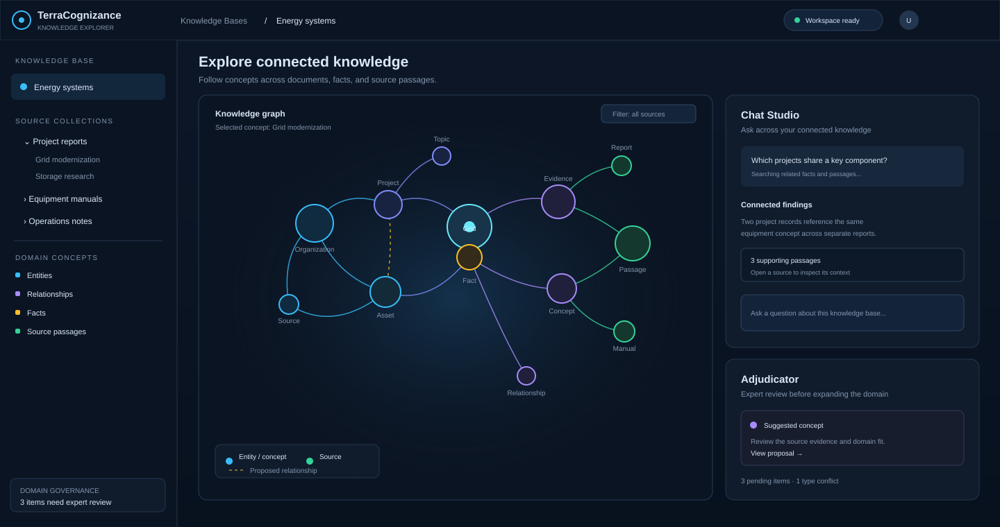

A domain-pluggable platform for extracting, connecting, searching, and governing knowledge from document collections.
Transforms unstructured source documents into entities, facts, and relationships through a quality-gated preparation process.
Combines semantic search with relationship traversal to find context across documents and connected concepts.
Follows links between entities and facts to uncover context that may be distributed across separate sources.
Connects findings to the passages they came from so users can inspect supporting evidence.
Lets domain experts review proposed concepts and relationships before expanding the knowledge model.
Adapts its domain concepts and rules to different knowledge bases while keeping each workspace focused on its sources.
The platform is designed for varied subject areas; the current project document uses a legal corpus as its test domain.
Connect entities, claims, source passages, and supporting evidence across a legal document corpus.
Relate assets, projects, events, and source records across energy and utility information.
Connect equipment, process concepts, and supporting documentation for broader knowledge discovery.
Organize domain concepts and source material to support traceable exploration of medical knowledge.
Explore relationships across relevant records while retaining links to the source information.
Review unfamiliar concepts and relationships with domain experts before incorporating them into shared knowledge.
TerraCognizance connects document-derived knowledge with semantic retrieval, relationship discovery, and source-linked answer synthesis.
| Traditional Retrieval Challenges | TerraCognizance Approach |
|---|---|
| Document collections contain related facts spread across sections and files. | A quality-gated process extracts entities, facts, and relationships into a navigable knowledge model. |
| Name variations can split references to the same entity and make related information harder to find. | Entity resolution brings matching references together before they are used for connected exploration. |
| Similarity-only search may miss multi-hop relationships between facts in different source passages. | Hybrid retrieval combines semantic matches with graph traversal to expand relevant context. |
| Unverified extracted information can introduce noise into a knowledge model. | The Adjudicator stages proposed concepts and relationships for expert review before ontology expansion. |
A product-level view of how TerraCognizance prepares source material, connects knowledge, and supports grounded exploration.